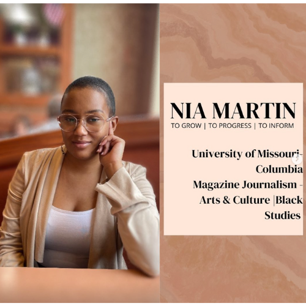

What did Jay Z call Beyoncé before they were married?
Fe-yoncé!
“For me, becoming isn't about arriving somewhere or achieving a certain aim. I see it instead as forward motion, a means of evolving, a way to reach continuously toward a better self. The journey doesn't end….”
- Michelle Obama
My Story
I first wanted to pursue social media (Instagram, YouTube, etc...) because I wanted to keep a record of where I've been, my personality, my intelligence, and my growth; to encourage me on my journey . Now, I realize telling the challenges and obstacles I've experienced can inspire. So thank you all for joining me on my journey and I hope my story can have an impact on you!
Things happen in our lives; we encounter challenges that we may not have chosen to experience. But our choice comes in when we chose how to react to them.
What did Jay Z call Beyoncé before they were married? Fe-yoncé!
Nia Martin
